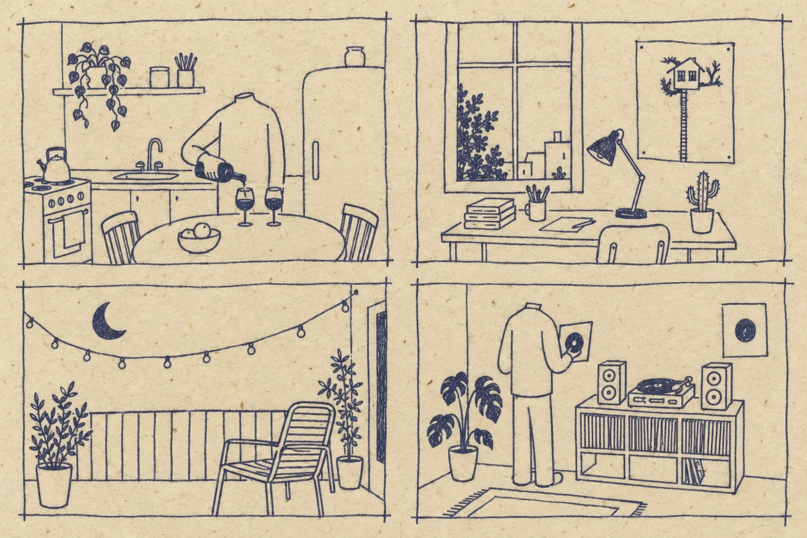
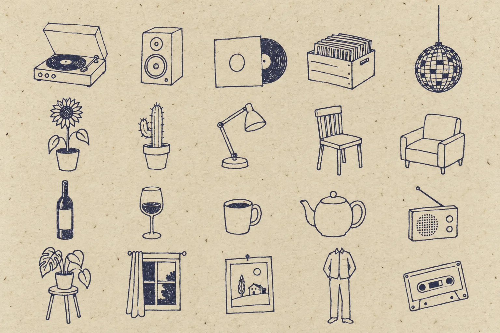
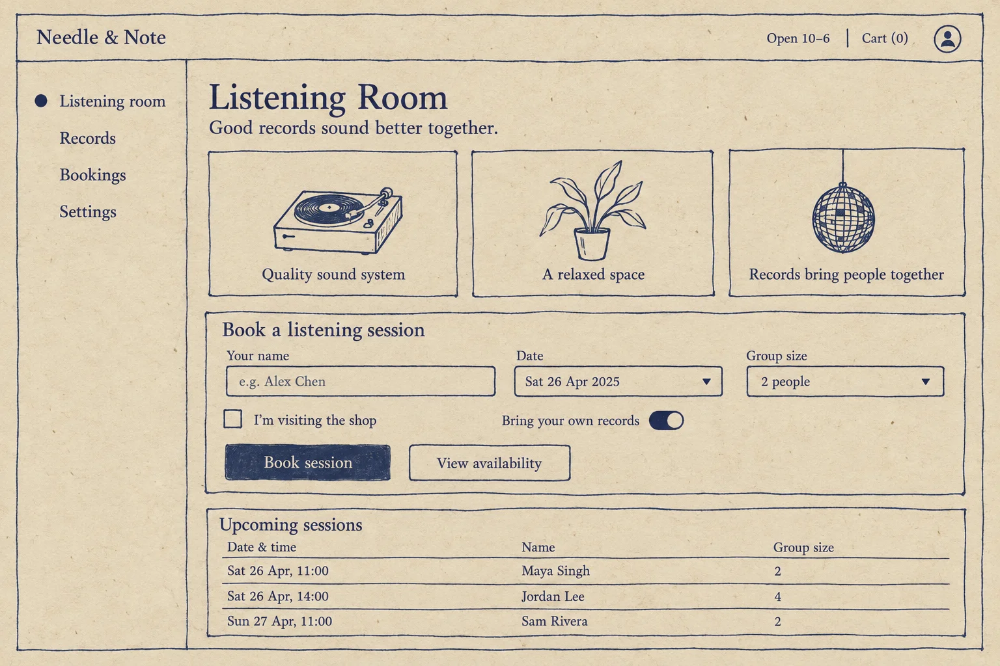

One pen, cream paper, and a room that is quietly a little strange.
Naïve Indie Line is a shadcn/ui kit drawn the way a natural-wine label is: a single fine-liner with a slow wobble, flattened perspective, no shading, and small pockets of solid ink where the eye should land.
A drawing from a seed
The rules
- One pen, one weight. Every line is the same thin monoline, in one ink. A second pen, red, only corrects.
- Contours, not tone. No gradients, no hatching, no shadows. Things are their outlines.
- Ink is rare. Solid fill marks the few places the eye should land: a record, a tile, the one button to press.
- A slow hand. Lines wobble gently and run a little past their corners; nothing is ruled.
- Flattened perspective. Objects tip toward you, and neighbours disagree a little about where the vanishing point is.
- Air is the material. Most of the sheet stays empty paper. Space and headings group things; lines are for controls, tables and what floats.
- Quiet type. A book serif set small, like the words on a label; a typewriter for menus, prices and labels; a hand only for asides.
- Quietly strange. Everyday things, and people who are only their clothes.
Paper and pen
Ratios are each pen against the current paper. Text needs 4.5:1.
The line
Voices
Read
Listening room, Thursday evenings
Bring a record you love and one you have never played. We put them on in the order they arrive, with the lights low and the windows open, and nobody talks over the second side.
Label
Side A · 33⅓ rpm · Nº 0412
Type
Hand
the good chairs are by the window
Our own letters
One skeleton alphabet stroked four ways, drawn by the pen. The same skeleton can build real font files.
Interface
The object library
Generated explorations
Made with gpt-image from the label photograph, as direction for the drawings above. They are not assets.


